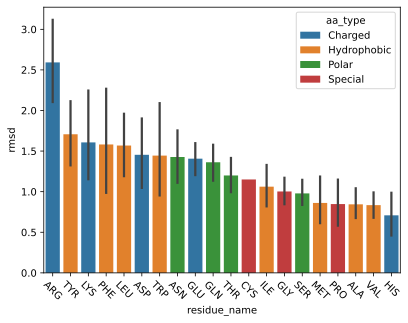

Per residue changes of TCR CDRs between apo and holo structures
Introduction
In this notebook, we look if there are certain residue positions that move more than others in the TCR CDR loops. We use these visualisations to further characterise the movement of CDR loops as either rigid-body, where the entire loop moves as one unit, or plastic, where the loop can mold to its target.
[1]:
import os
import matplotlib.pyplot as plt
import numpy as np
import pandas as pd
import seaborn as sns
[2]:
from matplotlib_inline.backend_inline import set_matplotlib_formats
set_matplotlib_formats('svg')
[3]:
DATA_DIR = '../data/processed/apo-holo-tcr-pmhc-class-I-comparisons'
Loading Data
[4]:
results = pd.read_csv(os.path.join(DATA_DIR, 'tcr_per_res_apo_holo_loop_align.csv'))
results
[4]:
| complex_id | structure_x_name | structure_y_name | chain_type | cdr | residue_name | residue_seq_id | residue_insert_code | rmsd | ca_distance | chi_angle_change | com_distance | |
|---|---|---|---|---|---|---|---|---|---|---|---|---|
| 0 | 3qdg_D-E-C-A-B_tcr_pmhc | 3qdg_D-E-C-A-B_tcr_pmhc.pdb | 3qeu_A-B_tcr.pdb | alpha_chain | 1 | ASP | 27 | NaN | 4.922807 | 2.215234 | -1.001709 | 3.836500 |
| 1 | 3qdg_D-E-C-A-B_tcr_pmhc | 3qdg_D-E-C-A-B_tcr_pmhc.pdb | 3qeu_A-B_tcr.pdb | alpha_chain | 1 | ARG | 28 | NaN | 7.683418 | 2.322292 | -1.010462 | 6.119157 |
| 2 | 3qdg_D-E-C-A-B_tcr_pmhc | 3qdg_D-E-C-A-B_tcr_pmhc.pdb | 3qeu_A-B_tcr.pdb | alpha_chain | 1 | GLY | 29 | NaN | 0.657793 | 0.718576 | NaN | 0.452200 |
| 3 | 3qdg_D-E-C-A-B_tcr_pmhc | 3qdg_D-E-C-A-B_tcr_pmhc.pdb | 3qeu_A-B_tcr.pdb | alpha_chain | 1 | SER | 36 | NaN | 1.224430 | 0.404912 | -2.505061 | 0.866544 |
| 4 | 3qdg_D-E-C-A-B_tcr_pmhc | 3qdg_D-E-C-A-B_tcr_pmhc.pdb | 3qeu_A-B_tcr.pdb | alpha_chain | 1 | GLN | 37 | NaN | 1.133408 | 0.467132 | 0.667185 | 0.798590 |
| ... | ... | ... | ... | ... | ... | ... | ... | ... | ... | ... | ... | ... |
| 6228 | 7rtr_D-E-C-A-B_tcr_pmhc | 7n1d_A-B_tcr.pdb | 7rtr_D-E-C-A-B_tcr_pmhc.pdb | beta_chain | 3 | ASP | 109 | NaN | 0.507077 | 0.180564 | 0.198956 | 0.208659 |
| 6229 | 7rtr_D-E-C-A-B_tcr_pmhc | 7n1d_A-B_tcr.pdb | 7rtr_D-E-C-A-B_tcr_pmhc.pdb | beta_chain | 3 | ILE | 114 | NaN | 2.164965 | 0.158682 | 3.679442 | 0.829175 |
| 6230 | 7rtr_D-E-C-A-B_tcr_pmhc | 7n1d_A-B_tcr.pdb | 7rtr_D-E-C-A-B_tcr_pmhc.pdb | beta_chain | 3 | GLU | 115 | NaN | 1.577728 | 0.195887 | 3.091039 | 0.995351 |
| 6231 | 7rtr_D-E-C-A-B_tcr_pmhc | 7n1d_A-B_tcr.pdb | 7rtr_D-E-C-A-B_tcr_pmhc.pdb | beta_chain | 3 | GLN | 116 | NaN | 0.204783 | 0.197683 | -0.014126 | 0.166472 |
| 6232 | 7rtr_D-E-C-A-B_tcr_pmhc | 7n1d_A-B_tcr.pdb | 7rtr_D-E-C-A-B_tcr_pmhc.pdb | beta_chain | 3 | TYR | 117 | NaN | 0.180118 | 0.164981 | -0.024244 | 0.170852 |
6233 rows × 12 columns
[5]:
summary_df = pd.read_csv('../data/processed/apo-holo-tcr-pmhc-class-I/apo_holo_summary.csv')
ids = summary_df['file_name'].str.replace('.pdb', '', regex=False)
ids.name = 'id'
summary_df = summary_df.set_index(ids)
summary_df
[5]:
| file_name | pdb_id | structure_type | state | alpha_chain | beta_chain | antigen_chain | mhc_chain1 | mhc_chain2 | cdr_sequences_collated | peptide_sequence | mhc_slug | |
|---|---|---|---|---|---|---|---|---|---|---|---|---|
| id | ||||||||||||
| 1ao7_D-E-C-A-B_tcr_pmhc | 1ao7_D-E-C-A-B_tcr_pmhc.pdb | 1ao7 | tcr_pmhc | holo | D | E | C | A | B | DRGSQS-IYSNGD-AVTTDSWGKLQ-MNHEY-SVGAGI-ASRPGLA... | LLFGYPVYV | hla_a_02_01 |
| 1b0g_C-A-B_pmhc | 1b0g_C-A-B_pmhc.pdb | 1b0g | pmhc | apo | NaN | NaN | C | A | B | NaN | ALWGFFPVL | hla_a_02_01 |
| 1b0g_F-D-E_pmhc | 1b0g_F-D-E_pmhc.pdb | 1b0g | pmhc | apo | NaN | NaN | F | D | E | NaN | ALWGFFPVL | hla_a_02_01 |
| 1bd2_D-E-C-A-B_tcr_pmhc | 1bd2_D-E-C-A-B_tcr_pmhc.pdb | 1bd2 | tcr_pmhc | holo | D | E | C | A | B | NSMFDY-ISSIKDK-AAMEGAQKLV-MNHEY-SVGAGI-ASSYPGG... | LLFGYPVYV | hla_a_02_01 |
| 1bii_P-A-B_pmhc | 1bii_P-A-B_pmhc.pdb | 1bii | pmhc | apo | NaN | NaN | P | A | B | NaN | RGPGRAFVTI | h2_dd |
| ... | ... | ... | ... | ... | ... | ... | ... | ... | ... | ... | ... | ... |
| 7rtd_C-A-B_pmhc | 7rtd_C-A-B_pmhc.pdb | 7rtd | pmhc | apo | NaN | NaN | C | A | B | NaN | YLQPRTFLL | hla_a_02_01 |
| 7rtr_D-E-C-A-B_tcr_pmhc | 7rtr_D-E-C-A-B_tcr_pmhc.pdb | 7rtr | tcr_pmhc | holo | D | E | C | A | B | DRGSQS-IYSNGD-AVNRDDKII-SEHNR-FQNEAQ-ASSPDIEQY | YLQPRTFLL | hla_a_02_01 |
| 8gvb_A-B-P-H-L_tcr_pmhc | 8gvb_A-B-P-H-L_tcr_pmhc.pdb | 8gvb | tcr_pmhc | holo | A | B | P | H | L | YGATPY-YFSGDTLV-AVGFTGGGNKLT-SEHNR-FQNEAQ-ASSD... | RYPLTFGW | hla_a_24_02 |
| 8gvg_A-B-P-H-L_tcr_pmhc | 8gvg_A-B-P-H-L_tcr_pmhc.pdb | 8gvg | tcr_pmhc | holo | A | B | P | H | L | YGATPY-YFSGDTLV-AVGFTGGGNKLT-SEHNR-FQNEAQ-ASSD... | RFPLTFGW | hla_a_24_02 |
| 8gvi_A-B-P-H-L_tcr_pmhc | 8gvi_A-B-P-H-L_tcr_pmhc.pdb | 8gvi | tcr_pmhc | holo | A | B | P | H | L | YGATPY-YFSGDTLV-AVVFTGGGNKLT-SEHNR-FQNEAQ-ASSL... | RYPLTFGW | hla_a_24_02 |
391 rows × 12 columns
[6]:
results = results.merge(
summary_df[['cdr_sequences_collated', 'peptide_sequence', 'mhc_slug']],
how='left',
left_on='complex_id',
right_index=True,
)
[7]:
results = results.merge(
summary_df[['file_name', 'pdb_id', 'structure_type', 'state', 'alpha_chain', 'beta_chain', 'antigen_chain', 'mhc_chain1', 'mhc_chain2']],
how='left',
left_on='structure_x_name',
right_on='file_name',
).merge(
summary_df[['file_name', 'pdb_id', 'structure_type', 'state', 'alpha_chain', 'beta_chain', 'antigen_chain', 'mhc_chain1', 'mhc_chain2']],
how='left',
left_on='structure_y_name',
right_on='file_name',
suffixes=('_x', '_y')
)
[8]:
results['comparison'] = results['state_x'] + '-' + results['state_y']
results['comparison'] = results['comparison'].map(lambda entry: 'apo-holo' if entry == 'holo-apo' else entry)
[9]:
results['structure_comparison'] = results.apply(
lambda row: '-'.join(sorted([row.structure_x_name, row.structure_y_name])),
axis='columns',
)
results = results.drop_duplicates(['structure_comparison',
'chain_type',
'cdr',
'residue_name',
'residue_seq_id',
'residue_insert_code'])
[10]:
results = results.groupby(['cdr_sequences_collated',
'comparison',
'chain_type',
'cdr',
'residue_name',
'residue_seq_id',
'residue_insert_code'], dropna=False)[['ca_distance', 'rmsd', 'chi_angle_change', 'com_distance']].mean().reset_index()
[11]:
results['resi'] = results['residue_seq_id'].apply(str) + results['residue_insert_code'].fillna('')
[12]:
results = results.query("comparison == 'apo-holo'")
[13]:
results
[13]:
| cdr_sequences_collated | comparison | chain_type | cdr | residue_name | residue_seq_id | residue_insert_code | ca_distance | rmsd | chi_angle_change | com_distance | resi | |
|---|---|---|---|---|---|---|---|---|---|---|---|---|
| 0 | ATGYPS-ATKADDK-ALSDPVNDMR-SGHAT-FQNNGV-ASSLRGR... | apo-holo | alpha_chain | 1 | ALA | 27 | NaN | 0.505979 | 0.727144 | NaN | 0.518151 | 27 |
| 1 | ATGYPS-ATKADDK-ALSDPVNDMR-SGHAT-FQNNGV-ASSLRGR... | apo-holo | alpha_chain | 1 | GLY | 29 | NaN | 0.914903 | 0.930089 | NaN | 0.854811 | 29 |
| 2 | ATGYPS-ATKADDK-ALSDPVNDMR-SGHAT-FQNNGV-ASSLRGR... | apo-holo | alpha_chain | 1 | PRO | 37 | NaN | 0.423195 | 0.503712 | -0.025853 | 0.389174 | 37 |
| 3 | ATGYPS-ATKADDK-ALSDPVNDMR-SGHAT-FQNNGV-ASSLRGR... | apo-holo | alpha_chain | 1 | SER | 38 | NaN | 0.401867 | 0.469748 | -0.121133 | 0.433753 | 38 |
| 4 | ATGYPS-ATKADDK-ALSDPVNDMR-SGHAT-FQNNGV-ASSLRGR... | apo-holo | alpha_chain | 1 | THR | 28 | NaN | 0.510473 | 1.928260 | 3.726374 | 0.564129 | 28 |
| ... | ... | ... | ... | ... | ... | ... | ... | ... | ... | ... | ... | ... |
| 1442 | YSGSPE-HISR-ALSGFNNAGNMLT-SGHAT-FQNNGV-ASSLGGA... | apo-holo | beta_chain | 3 | LEU | 108 | NaN | 1.022477 | 1.809773 | -1.412711 | 1.135954 | 108 |
| 1443 | YSGSPE-HISR-ALSGFNNAGNMLT-SGHAT-FQNNGV-ASSLGGA... | apo-holo | beta_chain | 3 | SER | 106 | NaN | 1.676174 | 1.573190 | -0.192425 | 1.510255 | 106 |
| 1444 | YSGSPE-HISR-ALSGFNNAGNMLT-SGHAT-FQNNGV-ASSLGGA... | apo-holo | beta_chain | 3 | SER | 107 | NaN | 1.091206 | 1.232135 | 2.393467 | 0.895901 | 107 |
| 1445 | YSGSPE-HISR-ALSGFNNAGNMLT-SGHAT-FQNNGV-ASSLGGA... | apo-holo | beta_chain | 3 | THR | 115 | NaN | 1.236042 | 1.347615 | -0.280349 | 1.218896 | 115 |
| 1446 | YSGSPE-HISR-ALSGFNNAGNMLT-SGHAT-FQNNGV-ASSLGGA... | apo-holo | beta_chain | 3 | TYR | 117 | NaN | 1.102913 | 1.209585 | -0.137036 | 0.922437 | 117 |
992 rows × 12 columns
Visualising Results
Ca movement
[14]:
sns.catplot(results.sort_values(['resi', 'chain_type', 'cdr']),
x='resi', y='ca_distance',
row='chain_type', col='cdr',
color='salmon',
sharex=False,
kind='bar')
[14]:
<seaborn.axisgrid.FacetGrid at 0x7f9a2a00b2b0>
Residue RMSD difference
[15]:
sns.catplot(results.sort_values(['resi', 'chain_type', 'cdr']),
x='resi', y='rmsd',
row='chain_type', col='cdr',
color='salmon',
sharex=False,
kind='bar')
[15]:
<seaborn.axisgrid.FacetGrid at 0x7f9a2a00af50>
Centre of Mass Changes
[16]:
sns.catplot(results.sort_values(['resi', 'chain_type', 'cdr']),
x='resi', y='com_distance',
row='chain_type', col='cdr',
color='salmon',
sharex=False,
kind='bar')
[16]:
<seaborn.axisgrid.FacetGrid at 0x7f9a2996ae30>
Comparing Residue Identity to movment
[17]:
results['aa_type'] = results['residue_name'].map({
'ARG': 'Charged',
'HIS': 'Charged',
'LYS': 'Charged',
'ASP': 'Charged',
'GLU': 'Charged',
'SER': 'Polar',
'THR': 'Polar',
'ASN': 'Polar',
'GLN': 'Polar',
'CYS': 'Special',
'GLY': 'Special',
'PRO': 'Special',
'ALA': 'Hydrophobic',
'VAL': 'Hydrophobic',
'ILE': 'Hydrophobic',
'LEU': 'Hydrophobic',
'MET': 'Hydrophobic',
'PHE': 'Hydrophobic',
'TYR': 'Hydrophobic',
'TRP': 'Hydrophobic',
})
[18]:
aa_means = results.groupby('residue_name')['rmsd'].mean().to_dict()
results['aa_mean'] = results['residue_name'].map(aa_means)
[19]:
sns.barplot(results.sort_values('aa_mean', ascending=False), y='rmsd', x='residue_name', hue='aa_type')
plt.xticks(rotation=-45)
print()

[20]:
num_side_chain_heavy_atoms = results['residue_name'].map({
'ARG': 7,
'HIS': 7,
'LYS': 5,
'ASP': 4,
'GLU': 5,
'SER': 2,
'THR': 3,
'ASN': 4,
'GLN': 5,
'CYS': 2,
'GLY': 0,
'PRO': 3,
'ALA': 1,
'VAL': 3,
'ILE': 4,
'LEU': 4,
'MET': 4,
'PHE': 7,
'TYR': 8,
'TRP': 10,
})
[21]:
sns.scatterplot(x=num_side_chain_heavy_atoms, y=results['rmsd'], hue=results['aa_type'])
plt.xlabel('number of heavy atoms in side chain')
plt.show()
Measuring differences in \(\chi\)-angles
Do the side chains change conformation as well?
[22]:
results['chi_angle_change_mag'] = results['chi_angle_change'].apply(np.abs)
results['chi_angle_change_deg_mag'] = results['chi_angle_change_mag'].apply(np.degrees)
[23]:
sns.catplot(results.sort_values(['resi', 'chain_type', 'cdr']),
x='resi', y='chi_angle_change',
row='chain_type', col='cdr',
color='salmon',
sharex=False,
kind='bar')
[23]:
<seaborn.axisgrid.FacetGrid at 0x7f9a2a20bf70>
[24]:
sns.catplot(results.sort_values(['resi', 'chain_type', 'cdr']),
x='resi', y='chi_angle_change_mag',
row='chain_type', col='cdr',
color='salmon',
sharex=False,
kind='bar')
[24]:
<seaborn.axisgrid.FacetGrid at 0x7f9a29bfeb90>
[25]:
sns.catplot(results.sort_values(['resi', 'chain_type', 'cdr']),
x='resi', y='chi_angle_change_deg_mag',
row='chain_type', col='cdr',
color='salmon',
sharex=False,
kind='bar')
[25]:
<seaborn.axisgrid.FacetGrid at 0x7f9a23a0b910>
Conclusion
From these results, it seems that the CDR-3 loops undergo plastic deformation but the CDR-1 and CDR-2 loops act as rigid bodies when contacting MHC molecules. This was determined by the flat profiles of the CDR-1 and -2 loops and the peaked, normal-like, distributions of CDR-3 loops (both CDR-A3 and CDR-B3).